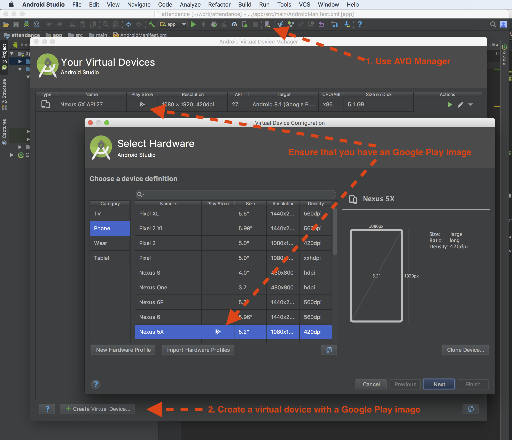

Attendance App
Using the Attendance App the students are able to view their recorded activity for a certain class.
Currently the app is available only on the Android platform. We are working on an iOS native version too.
You can install the app on your devices by following the details from the Google Play Store:
https://play.google.com/apps/testing/ro.cojocar.dan.attendance
If you are not owning an Android device with a 14+ API version we advise you to use an Android emulator. Using an image
that supports Google Play will allow you to use the app too.
